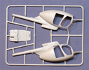
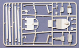
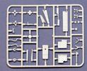
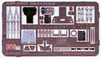
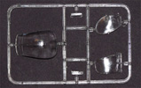
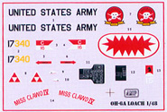

Kit #401 MSRP $49.95 $39.95 from Internet Hobbies
Images and text Copyright © 2009 by Matt Swan
AMP Models Hughes OH-6A Cayuse
Kit #401
MSRP $49.95 $39.95 from Internet Hobbies
Images and text Copyright © 2009 by Matt Swan
Developmental Background
In the civilian world it is the Hughes 500 while the military designation is OH-6A Cayuse but service men know it as the Loach, a nickname born from its class designation LOH or Light Observation Helicopter. Since it’s first flight in 1963 the type has been popular with militaries around the world and various police agencies. In 1960 the U.S. Army issued Technical Specification 153 for a LOH capable of filling a multitude of utility, escort and attack missions. Twelve companies participated in the competition which ultimately went to the Hughes Company for their Model 396.
The OH-6 established the form for the future of light military and civilian helicopters. By 1966, only three years into its service history, the type had set 23 world records for helicopters in speed, endurance and time to climb. In 1966 the type entered full service with the U.S. Army and headed to Vietnam where it performed admirably. In 1972 the rotor configuration was changed to include four blades with the intended result of creating a low noise helicopter for use in covert wire tapping missions. Shortly after that the rotor head was updated once more to a five blade configuration. Today the type is still in use with some militaries and is common in the civilian market. As would be expected there are significant internal differences between the military and civilian aircraft.
The Kit
AMP Models is a small company operating out of the Ukraine and has not had a lot of market exposure. Prior to this the company has only released two kits, both submarines. This offering when ordered direct from the manufacture arrives in a very light duty shipping box with the kit sealed in a series of zip-lock bags. An unassembled kit box is also included. The first thought that entered my mind when I opened this package was ‘is this actually 1/48 or did they make a mistake and it is really 1/72?’ Truth is it really is 1/48, it’s just a small helicopter and the delicately molded parts simply intensify the perception of small and delicate. This is not the only Hughes 500 series helicopter available in 1/48, Academy has issued the aircraft as a civilian police craft and as a military aircraft however both of their offerings are the later five blade versions and have civilian configured interiors where this kit from AMP is actually configured as an earlier four bladed military aircraft and believe me, there are some pretty noticeable differences.
The kit consists of three sprues of slightly soft injection molded parts that display excellent surface texture and finely engraved crisp panel lines. Interior details include well formed sticks, rudder pedals and collective along with accurately formed armored seats. Also included is a nice little minigun. There are a few areas that show some very minor flash and some medium mold separation seams but for the most part everything looks real good in this department. Unfortunately the clear parts are not as good as everything else. These pieces have some distortion and a few rough spots. A good treatment of Future may help; if that does not clear them up then some gentle polishing will be in order. The kit includes a very nice photo etched fret from Eduard that covers the seatbelts, instrument panel and a selection of other fine detail points.
Taking a full inventory of the contents we have forty nine light gray injection molded pieces, five clear parts and fifty one photo etched parts for a total of one hundred five pieces in the box. The kit is shown with the port side doors removed and those pieces are not even included in the box should the modeler want to build it with them in place.





You may click on these small images to view larger pictures
Decals and Instructions
Kit assembly instructions consist of two A4 sheets photo copied on three sides and folded to form six panels (did ya get all that?). We get twelve exploded view assembly steps that include just a very few color call-outs along with the bending instructions for the PE parts. 
There is a complete parts map of the plastic parts and a single panel with decal placement instructions for one bird. The instructions are simple yet clear and look sufficient to get the job done.
The decals look a little odd at first. I think we have become accustomed to seeing the slightly blue sheets as found in contemporary kits so the pink backing paper really catches the eye and changes the appearance on the sheet somewhat. But fear not, they are conventional decals that react normally to most common setting solutions. As the instructions indicate we get markings for only one bird but the colors all display good density and the print registry looks to be dead on the mark.
Conclusions
While not a perfect kit this is still a very nice kit. The injection molded pieces are very well done other than the poor quality of the clear parts. The addition of PE parts allows for some serious detailing in a small space. Instructions are adequate and decals are good. Overall it’s a very good kit and one that makes a great addition to any helicopter collection.


{kind=link}
{kind=link}
{kind=link}
{kind=link}
{kind=link}
{kind=link}